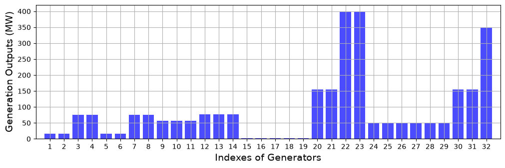

Optimal DC Power Flow#
The optimal power flow problem minimizes the overall operating cost in a electricity network while subject to a number of generation and transmission constraints. The DC approximation assumes fixed voltage magnitudes and small angle differences; it is a commonly used linear network approximation, written as:
where \(n\) is the number of buses, and \(m\) is the number of generators. The decision variables:
\(v_j\): the voltage angle of bus \(j\), with \(j=1, 2, ..., n\);
\(g_i\): the output of the \(i\)th generator, with \(i=1, 2, ..., m\),
and parameters:
\(\pmb{B}_{\text{bus}}\): the matrix of reciprocals of reactance between buses;
\(\pmb{I}_{\text{bg}}\): the matrix that places generations to their corresponding buses;
\(\pmb{L}\): the array of electricity load at each bus;
\(\pmb{B}_{\text{f}}\): the matrix for calculating the transmitted power;
\(P_i^{\min}\) and \(P_i^{\max}\): the minimum and maximum output of the \(i\)th generator;
\(\pmb{R}\): the array of transmission line capacity ratings.
In this case study, we consider the [GWA+99], and the dataset is generated according to the one used in MATPOWER. You may find the dataset as an Excel file ieee_rts.xlsx. The following code is used to import system parameters from the file.
# Load data from the Excel file
import pandas as pd
Bbus_df = pd.read_excel('ieee_rts.xlsx', sheet_name='Bbus')
Bf_df = pd.read_excel('ieee_rts.xlsx', sheet_name='Bf')
Gen_df = pd.read_excel('ieee_rts.xlsx', sheet_name='Gen')
Rates_df = pd.read_excel('ieee_rts.xlsx', sheet_name='Rates')
Load_df = pd.read_excel('ieee_rts.xlsx', sheet_name='Load')
Bbus = Bbus_df.values # Bbus array
Bf = Bf_df.values # Bf array
R = Rates_df['Rate_A'].values # line capacity ratings
GBus = Gen_df['GBus'].values # generator buses
Pmin = Gen_df['Pmin'].values # minimum outputs of generators
Pmax = Gen_df['Pmax'].values # maximum outputs of generators
C = Gen_df.loc[:, 'Cost_a':'Cost_c'].values # cost coefficients of generators
L = Load_df['Load'].values # electricity loads
n = Bf.shape[1] # n: Number of buses
m = len(GBus) # m: Number of generators
The DC optimal power flow problem can be solved by the following Python code.
from rsome import ro
import numpy as np
model = ro.Model()
v = model.dvar(n) # decision as voltage angles
g = model.dvar(m) # decision as the generation output
obj = (
(C[:, 0]**0.5 * g).sumsqr() + # squared term of the objective function
C[:, 1]@g + # linear term of the objective function
C[:, 2].sum() # constant term of the objective function
)
model.min(obj) # minimize the objective
I_bg = np.zeros((n, m))
I_bg[GBus-1, range(m)] = 1 # array of generator buses
model.st(Bbus@v + I_bg@g == L) # power balance equation
model.st(abs(Bf@v) <= R) # transmission line capacities
model.st(g >= Pmin, g <= Pmax) # output capacities of generators
Ref = 12 # index of the reference bus
model.st(v[Ref] == 0) # set the reference bus
model.solve() # solve the model
Being solved by ECOS 2.0.14...
Solution status: Optimal solution found
Running time: 0.0055s
The optimal generation decision and the objective value are shown below.
import matplotlib.pyplot as plt
gs = g.get()
index = range(1, m+1)
plt.figure(figsize=(12, 3.5))
plt.bar(index, gs, color='b', alpha=0.7)
plt.xlabel('Indexes of Generators', fontsize=14)
plt.ylabel('Generation Outputs (MW)', fontsize=14)
plt.xticks(index)
plt.xlim([0, m+1])
plt.grid()
plt.show()
print(f'Optimal generation cost: {model.get():0.2f}')

Optimal generation cost: 61001.24
Reference
Cliff Grigg, Peter Wong, Paul Albrecht, Ron Allan, Murty Bhavaraju, Roy Billinton, Quan Chen, Clement Fong, Suheil Haddad, Sastry Kuruganty, and others. The ieee reliability test system-1996. a report prepared by the reliability test system task force of the application of probability methods subcommittee. IEEE Transactions on power systems, 14(3):1010–1020, 1999.